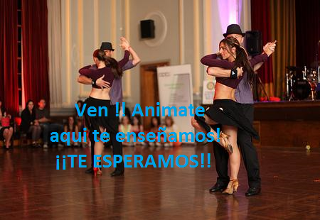

BACHATA |
|
Es un género musical bailable originario de la República Dominicana,
dentro de lo que se denomina folclore urbano. Está considerado como un derivado del bolero rítmico, influenciado
por otros estilos como el son cubano y el merengue. n la ejecución de la bachata tradicional, las maracas del
bolero fueron sustituidas por la güira, se asumió la ejecución virtuosa y libre del bongó propia del son cubano
y se incorporaron guitarras al estilo de los tríos latinoamericanos populares en México, Cuba y Puerto Rico.
1 En un primer momento, esta manera cruda de interpretación fue conocida como «bolerito de guitarra».
La bachata surgió en la marginalidad urbana de los bares y burdeles de Santo Domingo. Durante los años sesenta
y principios de los setenta, desdeñada como música de las clases pobres, fue conocida como «música de amargue».
Este concepto se refería al estado de melancolía provocado por el desamor, siempre reflejado en la temática de
sus composiciones. Su difusión por esos años, estuvo limitada a escasas emisoras, ya que era considerada como
una música vulgar. El interés masivo por el ritmo surgió a partir de los años ochenta, con la importancia que
alcanzó el ritmo en los medios de comunicación. Unos de los principales artistas y mas reconocidos son: Juan
Luis Guerra, Romeo Santos y Prince Royce. |
| Para mas informacion |

|